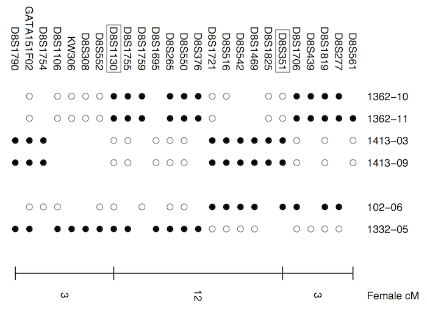

Broman KW, Matsumoto N, Giglio S, Martin CL, Roseberry JA, Zuffardi
O, Ledbetter DH, Weber JL (2003) Common long human inversion
polymorphism on chromosome 8p. In: Goldstein DR (ed)
Science and Statistics: A Festschrift for Terry Speed.
IMS Lecture Notes-Monograph Series, Vol 40, pp 237-245



Figure 1. — Maternal haplotypes for a small portion of chromosome 8p for six CEPH family children (identified by family–individual). Filled symbols indicate alleles from the maternal grandfather, open symbols alleles from the maternal grandmother, and blank spaces indicate missing data (due mostly to homozygous markers in the mother). The order of markers is telomeric (left) to centromeric (right). BACs encompassing the two markers shown in boxes were used in the FISH experiments.